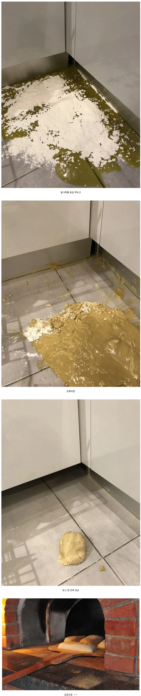

바닥에 식용유 쏟았을때 꿀팁
댓글
저게 또 별미임

그리고 완성된 빵은 남편 입으로
어? 어제 갑자기 빵을 구웠다고 주던..
각질털빵 완성
음 기막힌 팁이네
기름 닦을 생각하면 오또케 오또케 할만한데
진짜 되나?
ㅇㅇ 기름은 가루로 뭉쳐서 해치우면됨
난 종종 쓰거남은 폐기름 종이컵하나정도 나오면 유통기한 지난 밀가루랑 비닐팩에 넣고 조물조물해서 버림
이건 진짜 개꿀팁이네
조선소에선 시멘트로 누유 처리하기도 함
밀가루로 다 흡착되서 뽀득뽀득하게 청소됨
이스트 안넣으면 빵안돼
얇게 펴서 구우면됨
넣으면 되잖아?
쿠키로 만들면 됨
이스트는 전에 흘린거 바닦에 있음
???: 네 안녕하세요 402호인데요 제가 빵을 만들어서요~
쿰쿰한게 발효가 잘되었네요^^
바르내무스 치즈를 듬뿍 넣었어요 :)
이래서 밀가루 유통기한 지나도 못버림ㅋㅋ
인도보다 낫다
와 진짜 아이디어 개쩔었다
와! 먼지빵!
포도씨유랑 식용유 올리브유로 만ㄷ든빵중 뭐가 제일 맛있을까
하 미치겠네 식용류가 쓰던겁니까?
식용유 쏟으러 간다
식용유를 쏟을일이 있나?? ㅋㅋㅋㅋㅋㅋㅋㅋㅋㅋㅋ 개찔끔나오던디
네모난 양철통에 담긴 업소용 통은 콸콸나오지않을까 싶당
유리병인데 떨굴수도 잇는거고
입구가 넓은 것일 수도 있고
'크리스피'한 씨양념이 되어있는 빵. 이게 또 별미거등요
공장에서도 기름쏟으면 톱밥뿌려서치움
난이 이렇게 만들어지거든요
ㄹㅇ.. 피자할 때 빵 폐기를 오븐에 구워서 버렸는데.
빵에박힌 이 꼽털 머죠?
미드소마 못보셨나요? 내가 널 찍었음
오 꿀팁
인도의 반도체 공장